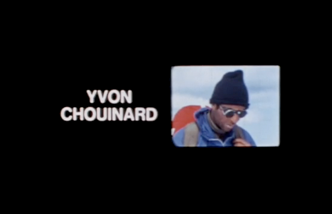
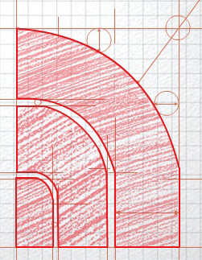

The - North - Face - The - North - Face - The - North - Face
-The - North - Face -The - North - Face -
The - North - Face - The - North - Face - The - North - Face -
The - North - Face - The - North - Face -
The - North - Face - The - North - Face - The - North - Face -
The - North - Face - The - North - Face —
The - North - Face - The - North - Face - The - North - Face
-The - North - Face -The - North - Face -
The - North - Face - The - North - Face - The - North - Face -
The - North - Face - The - North - Face -
The - North - Face - The - North - Face - The - North - Face -
The - North - Face - The - North - Face —
The
North
Face
History
The
North
Face
사람,자연 그리고
노스페이스의 탐험
노스페이스에게 자연은 정복의 대상이 아니라, 탐험을 통한 이해의
대상입니다.
샌프란시스코 노스 비치에서 가장 춥고 혹독한 산의 북면을 꿈꾸던
자유는 히말라야로 탐험을 가능하게 하였습니다.
우주와 자연의 원리에서 배운 노스페이스의 디자인 과학은 자연, 그
곳이 어디이든 사람을 그 곳으로 이끕니다.
사람과 자연의 더 나은 공존을 향한 노스페이스의 탐험은 계속됩니다.
History
-
1966's
1966년 샌프란시스코 노스 비치 지역에서 작은 아웃도어 장비용품점을 냈다. 가게 이름은 "노스페이스 THE NORTH FACE"였다. 1960년대 히피 문화의 중심지였던 샌프란시스코에 세운 "노스페이스"는 "자연으로 돌아가는"히피 문화의 최전선에 있었다.
-
1985's
마운틴 자켓이 출시되었습니다. 고어텍스 소재를 사용한 Weather Protection 자켓의 스텐다느라 불리우며 많은 브랜드로 부터 모방이 되었던 고어택스 자켓이 전설로 불리고 있습니다. 또한, 아웃도어 업체를 연합하여 야생환경을 그대로 보호하기 위한 목적으로 자연보호 단체인 "Outdooe Industry Consernation Alliance" 설립하여 자연의 대지와 삼림, 하천, 해양 들의 보노, 보줄을 위한 적극적인 활동을 시작하게 되었습니다.
-
1990's
1990년대는 THE NORTH FACE 가 도운 탐험가들이 세상을 탐험하듯이, THE NORTH FACE 도 아웃도어 시장을 탐험한 시기였습니다. 이 시기에 우리는 암벽등반가, 배낭여행가, 도보여행가 Trail Runner, 열망적인 아웃도어 활동가들에게 최고의 먹과 기능을 제공하기 위하여 기획된 혁신적인 Collection 인 Tekware 를 출시하시면서 스포츠웨어 시장에 데뷔하였습니다. THE NORTH FACE 의 Half의 Dome Logo 는 울트라 마라톤 코스,High - Coun Trail,그리고 거벽에서 더욱 번번히 보이기 시작했습니다.
-

DNA
노스페이스라는 이름은 북반구 높은 산들의 가장 춥고 바람이 거센 북쪽면, "북벽"을 의미합니다. 알피니스트들의 끝없는 도전 정신이 숨어 있는 로고, 노스페이스는 로고에서 부터 탐험의 DNA가 흐르고 있습니다.